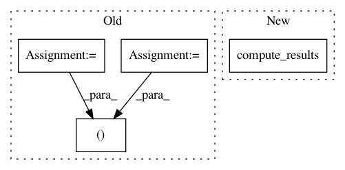

08227bd5e8fe37c8eb9381a61bb64ab290bb8ed0,tests/evaluation_tests.py,TestGoodnessOfFitTests,test_gaussian_dummy_kolmogorov_cdf_1,#TestGoodnessOfFitTests#,14
Before Change
est = GaussianDummy(mean=2, ndim_x=1, ndim_y=1)
prob_model = SimulationDummy(mean=2, ndim_x=1, ndim_y=1)
gof = GoodnessOfFit(est, prob_model, n_observations=10000)
ks, p = gof.kolmogorov_smirnov_cdf()
print("cdf-based KS test (t, p): ", ks, p, "alpha: ", alpha)
print(gof)
self.assertGreater(p, alpha)
After Change
est = GaussianDummy(mean=2, ndim_x=1, ndim_y=1)
prob_model = SimulationDummy(mean=2, ndim_x=1, ndim_y=1)
gof = GoodnessOfFit(est, prob_model, n_observations=10000)
gof_results = gof.compute_results()
print("cdf-based KS test (t, p): ", gof_results.mean_ks_stat, gof_results.mean_ks_pval, "alpha: ", alpha)
print(gof)
self.assertGreater(gof_results.mean_ks_pval, alpha)
self.assertLess(gof_results.mean_kl, 0.01)
In pattern: SUPERPATTERN
Frequency: 3
Non-data size: 4
Instances
Project Name: freelunchtheorem/Conditional_Density_Estimation
Commit Name: 08227bd5e8fe37c8eb9381a61bb64ab290bb8ed0
Time: 2018-01-19
Author: jonas.rothfuss@gmx.de
File Name: tests/evaluation_tests.py
Class Name: TestGoodnessOfFitTests
Method Name: test_gaussian_dummy_kolmogorov_cdf_1
Project Name: freelunchtheorem/Conditional_Density_Estimation
Commit Name: 6fcfe692266cb685d19cef170a310fe14e414636
Time: 2018-01-19
Author: f4bio.ferreira@gmail.com
File Name: tests/evaluate_configurations.py
Class Name:
Method Name: run_single_configuration
Project Name: freelunchtheorem/Conditional_Density_Estimation
Commit Name: 08227bd5e8fe37c8eb9381a61bb64ab290bb8ed0
Time: 2018-01-19
Author: jonas.rothfuss@gmx.de
File Name: tests/evaluation_tests.py
Class Name: TestGoodnessOfFitTests
Method Name: test_gaussian_dummy_kolmogorov_cdf_2